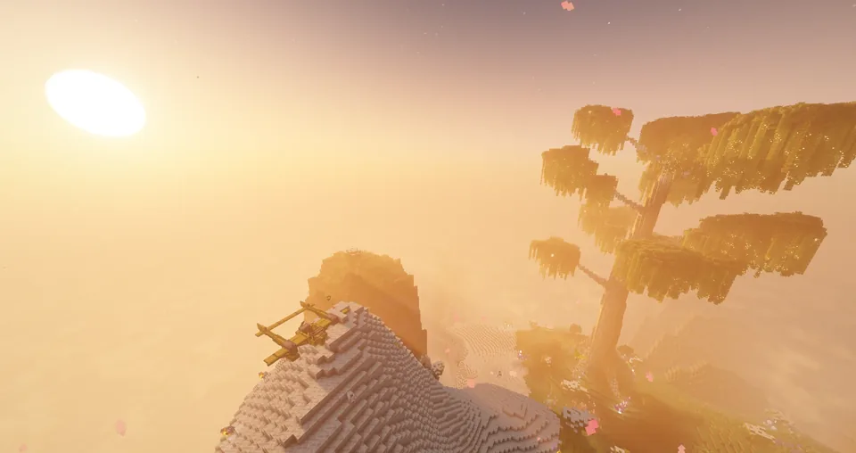
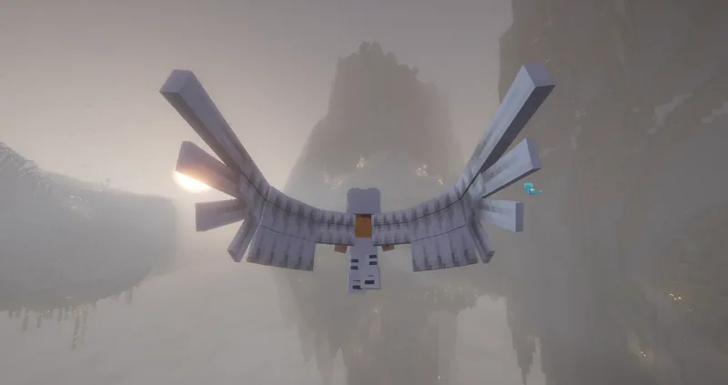
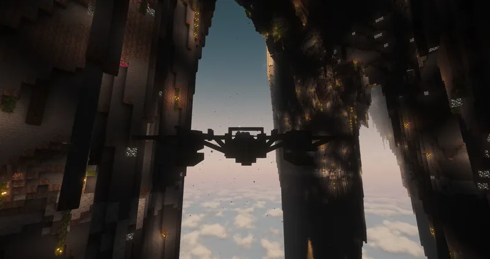
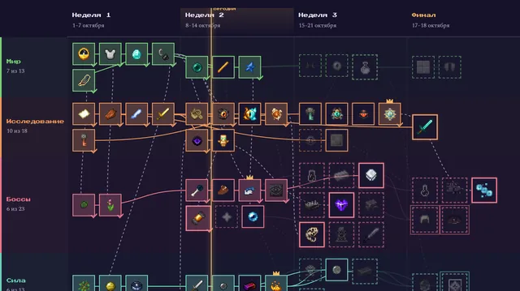

Статистика
Сезон в цифрах
- 16игроковиз 24 в вайтлисте. Восьмеро так и не поднялись в небо
- 218,7часа в игребольше 9 суток, если сложить всех вместе
- 8 582убитых моба141 вид. Больше половины — на счету одного StevenXUX
- 418смертейкто-то погибал каждые 31 минуту игры
- 1 785километровкак от Москвы до Берлина. 1 162 из них — в полёте
- 118 597блоков добытоиз них 350 — алмазная руда
- 68 595крафтовв 3,7 раза больше, чем в первом сезоне. Create обязывает
- 27боссов повержено13 разных. 17 из них — mr_Webber_Webber
- 5онлайн на пикев первый же вечер, 28 сентября в 21:47. Самый людный день — 29-е, 11 игроков
- 571сообщение в чатебольше половины — aliveenjoyer
- 4запуска серверав первом сезоне их было 46. Мы стали спокойнее
Хроника
Как это было
- 28.09
Тихий запуск
Мир сезона открыт для своих — за три дня до официального старта.
aliveenjoyer чеканит первую монету сезона.
Keanu находит первые алмазы. Через пять минут у aliveenjoyer первая железная броня.
…а потом aliveenjoyer умирает от голода. До полуночи от голода умрут ещё трое, StevenXUX — дважды: в этой сборке еда — не формальность.
Пять игроков онлайн одновременно — пик всего сезона.
dsy за семь минут получает легендарные чернила и атомный сплав. В первый же вечер.
В mr_Webber_Webber посреди боя со скелетом бьёт молния. Единственная молния сезона.
- 29.09
Самый людный день: 11 игроков
mr_Webber_Webber первым входит в Незер.
aliveenjoyer первым попадает в Эмпирей. За сезон там побывают семеро.
dsy находит крепость Незера.
- 30.09
mr_Webber_Webber ловит трезубец утопленника четыре раза за четыре минуты.
У aliveenjoyer своя энергия и Mekanism. Будущий завод ОЛИВКИ начинается здесь.
- 01.10
Официальный старт
anstlixx ловит первую рыбу сезона. В первом сезоне до этого так никто и не дошёл.
aliveenjoyer разбирается с Привратником Вечного Звездосветья.
Первые ежедневные «Осколки неба»: к 19:02 StevenXUX забирает два осколка из трёх.
- 03.10
Ночь Сумеречного леса
anstlixx первой поднимается в Эфир.
mr_Webber_Webber входит в Сумеречный лес — и за час White Legion кладёт Нагу, Лича, Гриботавра и Гидру.
Итог «Стартового рывка»: White Legion — 34 вехи, ОЛИВКА — 28.
- 04–08.10
StevenXUX находит Кузню душ, anstlixx — Жужжилище, а mr_Webber_Webber надевает первый MekaSuit.
- 09.10
Ночной лич повержен.
Визер — StevenXUX и mr_Webber_Webber, вдвоём.
- 10.10
День White Legion
Первая ME-сеть сезона.
Последний «Осколок неба» сезона — гигантское Небесное озеро.
Через минуту после входа в Энд Эндер-дракон повержен. «Гонка к дракону» за White Legion.
Обсидилит, Город Энда, элитры и Разрушенная цитадель — всё за сорок минут.
- 11.10
mr_Webber_Webber за четырнадцать минут проходит Рыцарей-призраков, Древнего гаста, Альфа-йети и Снежную королеву. Три короны Сумеречного леса.
Последний выход с сервера — тоже его. Небо затихло.
- 26.10
Сезон закрыт, мир сохранён.
Измерения
Открыто 7 миров из 12
- Обычный мирвсе 16
- Незерmr_Webber_Webber · 29.09 · 5 игроков
- Эмпирейaliveenjoyer · 29.09 · 7 игроков
- Эфирanstlixx · 03.10
- Сумеречный лесmr_Webber_Webber · 03.10 · 3 игрока
- Жужжилищеanstlixx · 06.10. Пчёлы дождались
- ЭндWhite Legion · 10.10 · 2 игрока
- Вечное ЗвездосветьеПривратник повержен, а портал так и не открыли
- Шахтёрские мирыруда лежит нетронутая
- Пустотав пустоте пусто
- Мир демонови слава богу
- Глубокие Низиныждут
Небо облетали всерьёз: StevenXUX налетал 852 км — больше, чем все остальные вместе.
Трофеи
Боссы сезона
Полоски здоровья настоящие. Ну, почти.
- Эндер-дракон×2
mr_Webber_Webber · StevenXUX · 10.10
Через минуту после входа в Энд. Дракон даже не успел представиться.
- Визер×2
StevenXUX · mr_Webber_Webber · 09.10
Призван и побеждён вдвоём. Звезда Незера ушла на маяк.
- Призрак рыцаря×9
mr_Webber_Webber 6 · StevenXUX 3
Рыцари ходят отрядом. Не помогло.
- Нага×3
StevenXUX 2 · mr_Webber_Webber 1
Первый босс Сумеречного леса, 3 октября.
- Обсидилит×3
mr_Webber_Webber 2 · StevenXUX 1
- Лич×1
StevenXUX · 04.10
- Гидра×1
StevenXUX · 04.10
Три головы против одного StevenXUX. Арифметика не сработала.
- Гриботавр×1
mr_Webber_Webber · 04.10
- Ночной лич×1
mr_Webber_Webber · 09.10
- Перчатка незера×1
mr_Webber_Webber · 10.10
- Древний гаст×1
mr_Webber_Webber · 11.10
- Альфа-йети×1
mr_Webber_Webber · 11.10
- Снежная королева×1
mr_Webber_Webber · 11.10
Последний босс сезона. Небо прояснилось.
Сумеречный лес — пройден. Нага, Лич, Гриботавр, Гидра, Рыцари-призраки, Древний гаст, Альфа-йети и Снежная королева: все восемь у White Legion.
Bosses of Mass Destruction — 3 / 4. Обсидилит, Перчатка и Ночной лич. Цветок пустоты остался цвести.
Так и остались непобеждёнными
- Игнис
- Левиафан
- Незеритовое чудище
- Предвестник
- Маледиктус
- Древние Останки
- Эндер-хранитель
- Сцилла
- Слайдер
- Королева Валькирий
- Дух Солнца
- Звездосветный голем
- Лунное чудовище
- Цветок пустоты
- Дикая химера
- Мёртвый король
- Хранитель
- Древний страж
- Первый Звонарь Эмпирея
Командный зачёт
White Legion против ОЛИВКИ
White Legion
234 квеста
mr_Webber_Webber StevenXUX Mavei Yamato_892
ОЛИВКА
93 квеста
aliveenjoyer ramzBOSS anstlixx dsy
Стартовый рывок
White Legion — 34 вехи
ОЛИВКА 28, VeniKommit 10, 0_K0TIK_0 9, Keanu 7. Последнюю веху White Legion взяли в Сумеречном лесу за десять минут до финиша.
Гонка к дракону
White Legion — 10.10, 13:50
Единственные, кто долетел до Энда.
Охота на боссов
White Legion — 8 боссов
Вторая неделя. Соперники в это время строили базы.
Осколки неба
24 осколка: StevenXUX — 21
Остальные три забрал mr_Webber_Webber. Острова падали каждый день в 18:00 — StevenXUX уже ждал.
Гран-при на дирижаблях и Арена
не состоялись
К финалу 17–18 октября небо опустело. Дирижабли остались в ангарах.
Без команды играли Haggesy, t1s, 0_K0TIK_0, voV4ick_XXL, Keanu, FNtualet, VeniKommit и sashawaify.
Кто кого
Злодей сезона
Архизаклинатель
70 убитых игроков
Маг из Iron's Spells. Убивал игроков чаще любого другого моба: у зомби 56, у скелетов 45. А 15 раз игроков убили сами игроки.
Самые опасные
Самые убиваемые
- 10 раз умерли от голода.
Пять из них — в первый же вечер. - 27 раз — трезубцем утопленника.
Четыре — у одного человека за четыре минуты. - 16 раз mr_Webber_Webber убили зомбифицированные пиглины.
Пиглины всё помнят. - 1 молния за сезон.
Угадайте, в кого.
Тайна сезона раскрыта
Одержимым был 0_K0TIK_0
«Эхо Бездны» выбрало его Одержимым. Он заходил шесть раз и исчез 1 октября — в день официального старта. Ни одной диверсии, ни одного суда, Порча — 0%. Самый мирный злодей в истории сервера.
Зал славы
Номинации
MVP сезона
mr_Webber_Webber
- 84,5 часа и 14 дней из 14 — больше всех
- 17 боссов из 27: дракон, Визер и все три короны Сумеречного леса
- Раньше всех — в Незере и Сумеречном лесу
- Первые MekaSuit и ME-сеть сезона
- 476 достижений — больше всех на сервере
- 46 343 прыжка и 194 смерти. Жил ярко
Гроза мобов
StevenXUX
4 600 мобов — больше половины всех
Зомби объявили траур.
Ловец осколков
StevenXUX
21 «Осколок неба» из 24
Острова падали, а он уже стоял внизу.
Шахтёр
aliveenjoyer
31 626 блоков
Под заводом ОЛИВКИ теперь эхо.
Голос сервера
aliveenjoyer
303 сообщения в чате
Второй сезон подряд.
Рыбак сезона
anstlixx
5 рыб из 8
Вакансия, открытая в первом сезоне, закрыта.
Первопроходец
anstlixx
Эфир и Жужжилище — первой
Куда anstlixx, туда и остальные. Потом.
Алмазный старт
Keanu
первые алмазы через три часа
И первый клад сезона в тот же вечер.
Атомщик
dsy
атомный сплав в первый вечер
Остальные в это время искали еду.
Соня
0_K0TIK_0
16 ночей в кровати
Днём спал. Чем занимался по ночам — см. выше.
Груша для битья
Yamato_892
18 650 сердец урона за 2 часа
9 раз — от рук игроков. Добро пожаловать на сервер.
Болтун-спринтер
FNtualet
50 сообщений за полчаса игры
Сообщение каждые 36 секунд.
Все игроки
Таблица сезона
Нажми на заголовок столбца, чтобы отсортировать.
| Игрок | Часов | Дней | Смертей | Мобов | км | Добыто | Алмазы | Достижений |
|---|
Сделано к сезону
Что мы сделали

Эмпирей — своё измерение сезона: Пристань, Подгорье и Первый Звонарь, который так и не пал

Туман над архипелагом Эмпирея

Изнанка Эмпирея: скалы в сотни блоков свисают с неба

Карта сезона на сайте: вехи, команды, зал славы и позора
- 517 модов: Craftoria и 17 добавок — Эфир, дирижабли Create Aeronautics, 55 рас NeoOrigins, The Hordes.
- «Осколки неба»: 31 летающий остров и ежедневный ивент в 18:00 с сундуками и осколками.
- «Эхо Бездны»: ивент-импостер с Одержимым, судом и Порчей. Одержимый, правда, ушёл раньше всех.
- Путеводитель на клавишу Э и установщик сборки в одну кнопку.
- Карта сезона: 168 вех, живой командный зачёт и номинации прямо на сайте.
- Технополис «Эхо»: промышленный мир, где собраны все техно-моды сборки, с кольцевой дорогой и двумя поездами.
- Русские руководства Industrial Foregoing и PneumaticCraft — больше 300 страниц.
Титры
В ролях
В ролях
Хозяин сервераaliveenjoyer
Главный геройmr_Webber_Webber
Гроза мобов и небаStevenXUX
Первопроходецanstlixx
Тот, кто держал ОЛИВКУramzBOSS
Атомщикdsy
Алмазный стартKeanu
Одержимый0_K0TIK_0
Рывок первых днейVeniKommit
Белый легионMavei · Yamato_892
Болтун-спринтерFNtualet
Камеоt1s · Haggesy · voV4ick_XXL · sashawaify
Злодеи
Главный злодейАрхизаклинатель
Злодей второго планаЗомбифицированный пиглин
Тихий злодейЭхо Бездны
Каскадёры
Голод10 выходов
Трезубец27 выходов
Молния1 выход, зато какой
Особая благодарность
Восемь рыбза то, что наконец попались
Эндер-драконза то, что не мучил White Legion долго
Продолжение следует
Следите за сайтом